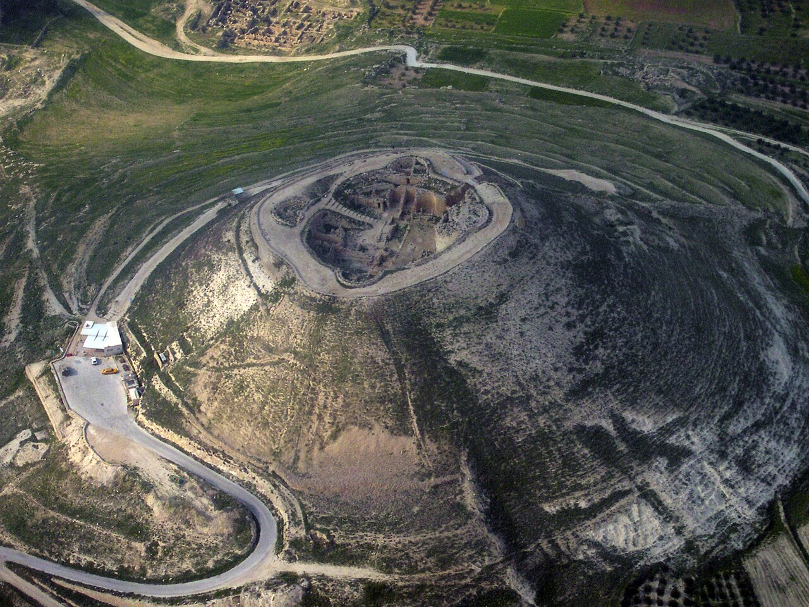

Herodium (Herod's Tomb)

- Find Name
- Herodium (Herod's Tomb)
- Historical Period
- Roman
- Artifact Date
- 1st century BC (built c. 23–15 BC)
- Date Discovered
- 2007
- Discovery Location
- Herodium, Judean Desert, Israel
- Current Location
- In situ, Herodium National Park
- Timeline Era
- Return and Second Temple
- Description
- Herod the Great's palace-fortress, a man-made mountain rising above the Judean Desert southeast of Bethlehem, with a palace, bathhouses, a theater, and a monumental tomb. Excavator Ehud Netzer searched for Herod's tomb for thirty-five years before identifying a mausoleum on the slope in 2007; a few scholars have questioned that identification.
- Biblical Significance
- Herod is the king who tried to kill the infant Jesus and who rebuilt the Temple into one of the wonders of the ancient world. His fortress-tomb still dominates the skyline near Bethlehem — the monument of a man who built for eternity and is remembered mostly for the child he could not destroy.
- Evidence Class
- Contextual
- Interpretations
- Scholars broadly accept Netzer’s identification of the mausoleum as Herod’s tomb, though a few have questioned it; the palace-fortress itself is certainly Herod’s.
- Scripture Illuminated
- Related Books
Awaiting Review Not yet checked against scholarly sources. Treat its claims as provisional until this entry is reviewed. About verification
Last reviewed: not yet reviewed